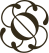
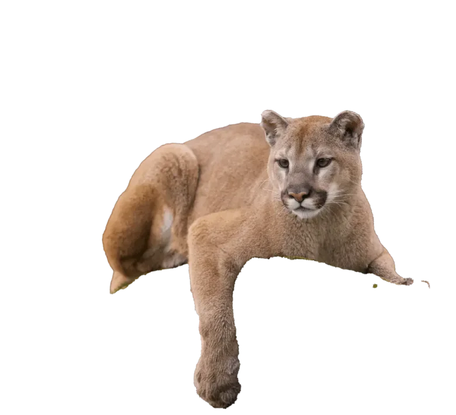
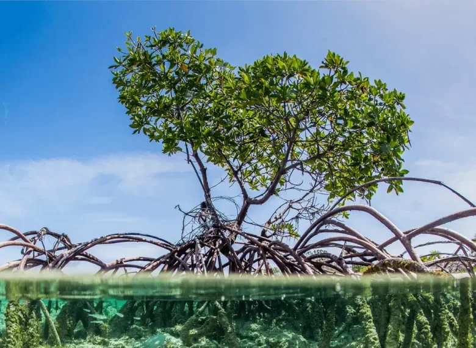
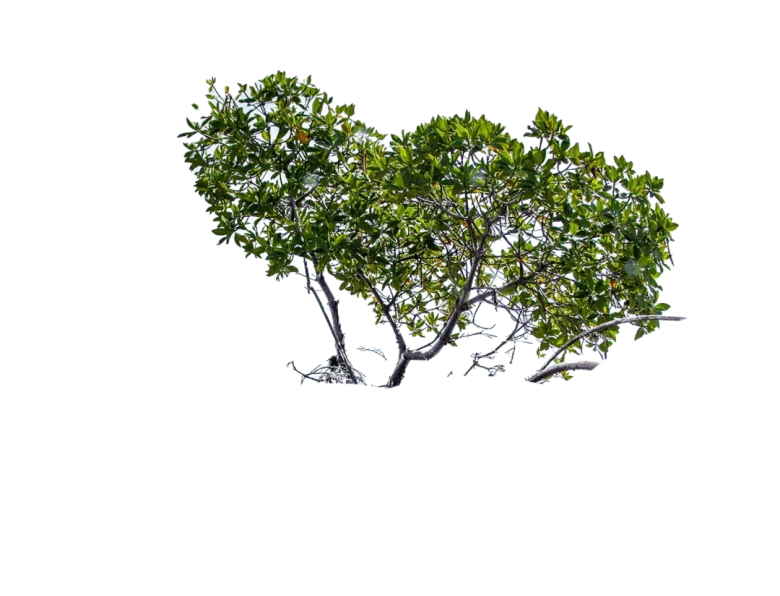
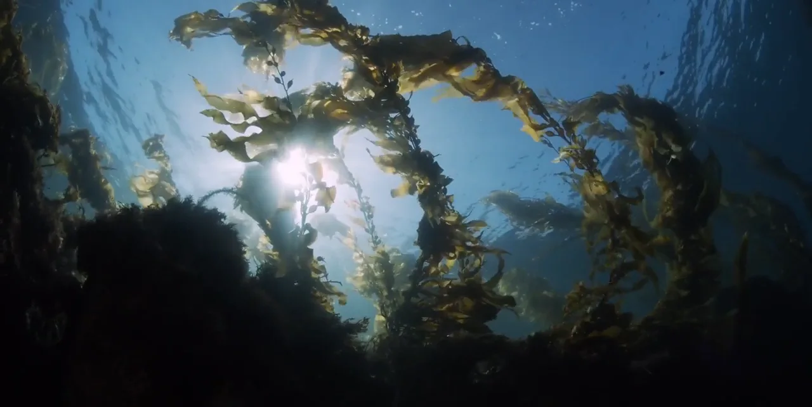
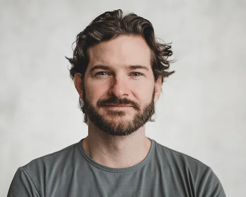
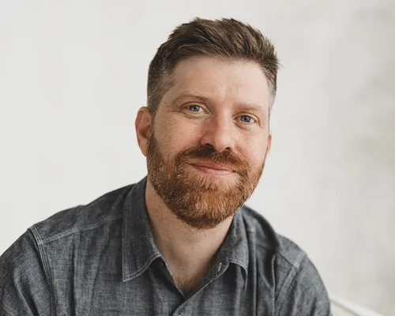
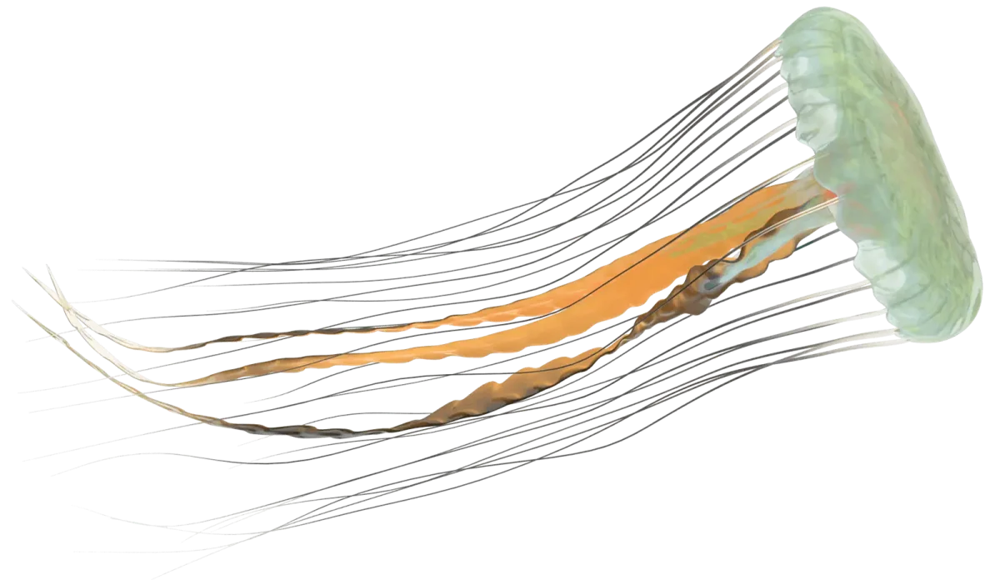

Superorganism is the first venture firm dedicated to biodiversity. We work with founders bold enough to imagine an abundant future for humans and nature alike.

Nature runs through our entire economy.
Our investment strategy does too.

The industries most responsible for biodiversity loss are the ones that most need disruption. We look for startups with new ideas to slow and reverse drivers of extinction.


Biodiversity and climate are intrinsically linked, and we invest in tech-driven solutions that are win-wins for both.
From fungi to fintech, we back pre-seed and seed startups that are literally changing the world.

Our mission is to find and supercharge founders taking on the planet’s most important work. Together, we bring networks and over two decades of experience across conservation, venture, and startups.


We’ve pledged 10% of Superorganism’s profits to future conservation efforts. Learn more about the nature funding gap here.

VentureWeb design, Development